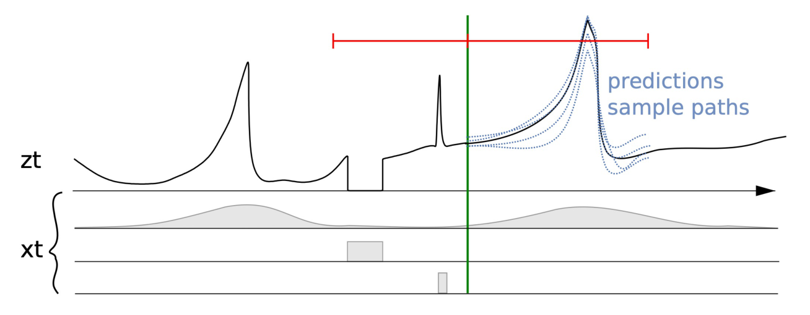
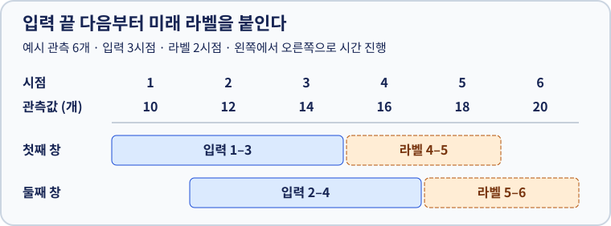

1. 시계열 예측 기초
시계열에서는 관측 순서가 입력의 일부다. 기준 시점 뒤의 값을 입력에 섞으면 실제로는 불가능한 예측을 평가하게 된다. 이 장을 마치면 과거와 미래를 분리해 학습쌍을 만들고, 단순 기준 모델보다 개선됐는지 판단할 수 있다.
1. 시계열 예측(Time Series Forecasting)은 무엇을 맞히는가
시계열은 순서가 의미 있는 관측의 열이다. 주가·판매량·센서처럼 시각이 명시될 수도 있고, 시각 없이 순서만 있을 수도 있다. 길이는 고정/가변, 관측 간격은 정규/불규칙, 값은 단일/복수 변수일 수 있다. 전체 시퀀스의 분류·군집·이상 판별과 달리 예측은 특정 기준 시점 뒤의 값을 묻는다. 시점별 상승·하락 분류나 이상 사건 탐지도 가능하지만 출력은 연속값 예측과 다르다.
먼저 기준 시점을 정한다. 오늘 영업이 끝난 뒤 내일 판매량을 예측한다면, 오늘까지의 판매량은 입력이고 내일 판매량은 나중에 확인할 정답이다. 요일이나 미리 정해진 행사처럼 예측할 때 이미 아는 정보도 입력에 넣을 수 있다.
점 예측은 시점별 대표값 하나를 낸다. 분포 예측은 가능한 미래에 확률을 붙여 불확실성까지 나타낸다. 예를 들어 평균 100, 표준편차 5인 정규분포를 가정하면 점 예측은 100이고 표준편차는 값이 흩어진 정도를 나타낸다. 예를 들어 같은 예상 수요 100개라도 널리 퍼진 분포라면 재고 의사결정은 달라진다.

세로 기준선 왼쪽은 이미 관측한 과거다. 오른쪽 파란 선들은 가능한 미래 경로다. 아래쪽 띠는 날씨나 행사 같은 추가 정보의 예다. 오른쪽까지 그려져 있어도 실제 미래 날씨를 이미 안다는 뜻은 아니다. 그림 크게 보기 · 출처: 시계열 예측 기초, 6쪽.

추가 특성(Attribute): 판매량 옆에 어떤 정보를 붙일까
예측하려는 값이 판매량이라면, 요일·행사·날씨 같은 추가 정보가 특성이다. 영업이 끝난 일요일에 월요일 판매량을 맞힌다고 하자. 월요일이 공휴일인지, 행사가 예정돼 있는지는 이미 알 수 있다. 하지만 월요일 실제 강수량은 아직 모른다.

그림의 왼쪽은 일요일 밤에 알 수 있는 정보, 오른쪽은 그 뒤에야 관측하는 값이다. 날짜가 미래인지뿐 아니라, 그 값을 언제 알게 되는지를 본다.
| 붙이고 싶은 특성 | 일요일 밤에 쓸 수 있나? | 이유 |
|---|---|---|
| 월요일의 요일·공휴일·예정된 행사 | 가능 | 미리 정해진 정보다. |
| 일요일까지의 실제 강수량 | 가능 | 이미 관측한 과거다. |
| 그때 발표된 월요일 강수 예보 | 가능 | 예측 당시 이용할 수 있었던 정보다. |
| 월요일 실제 강수량 | 불가 | 예측 뒤에야 관측한다. 평가 데이터에서만 이를 넣으면 실제 운영과 조건이 달라진다. |
추가 특성이 많다고 항상 더 잘 맞는 것은 아니다. 예측할 값과 관계가 있는지, 학습할 때와 실제 사용할 때 같은 의미로 얻을 수 있는지 확인한다.
2. 훈련·테스트 데이터와 슬라이딩 윈도우를 만든다
먼저 시간순으로 훈련/검증/테스트의 라벨 구간을 정한다. 훈련 구간의 통계만으로 전처리를 적합하고, 모델 선택은 검증 구간에서 한다. 테스트 구간을 보고 모델이나 설정을 고르면 테스트가 검증으로 쓰인 것이다.
| 데이터 | 역할 | 해서는 안 되는 일 |
|---|---|---|
| 훈련 데이터(Training Data) | 과거 입력과 라벨을 보고 모델의 가중치를 배운다. | 미래 테스트값으로 전처리 기준까지 정하기 |
| 검증 데이터(Validation Data) | 윈도우 크기나 모델을 비교하고 선택한다. | 이 결과를 최종 독립 평가라고 보고하기 |
| 테스트 데이터(Test Data) | 선택을 끝낸 모델이 새로운 구간을 얼마나 맞히는지 평가한다. | 테스트 결과를 계속 보며 설정을 바꾸기 |
아래 그림의 간단한 훈련·테스트 예에서는 1~6일을 학습하고 7~8일을 맞힌다. 실제로 모델 설정도 고르려면 훈련 기간 일부를 더 나눠 검증에 사용한다.

이제 훈련에 쓸 판매량 10, 12, 14, 16, 18, 20개를 묶자. **슬라이딩 윈도우(Sliding Windows)**는 연속한 입력 구간을 옮겨 가며 여러 학습 예를 만드는 방법이다. 이 예에서는 한 칸씩 옮긴다. **윈도우 크기(Window Size)**는 입력으로 보는 과거 관측의 개수다. 과거 3개로 미래 2개를 맞힌다면 윈도우 크기는 3이고, 미래 2개는 별도의 예측 길이다.


왼쪽에서 오른쪽으로 시점을 읽는다. 둘째 창의 입력 끝은 시점 4이므로 라벨은 시점 5부터 시작한다. 앞뒤 창이 겹쳐도 하나의 창에서 미래 라벨을 입력으로 쓰지는 않는다.
| 시작 시점 | 과거 입력 3개 | 미래 라벨 2개 |
|---|---|---|
| 1 | 10, 12, 14 | 16, 18 |
| 2 | 12, 14, 16 | 18, 20 |
첫 창은 1일에, 두 번째 창은 2일에 시작한다. 3일에 시작하면 마지막 라벨이 7일에 놓여 자료를 벗어난다. 입력과 라벨 사이를 하루 비우면 첫 창만 남는다. 훈련과 평가를 나눌 때는 라벨의 날짜를 먼저 구분한다. 평가 첫날에 이미 알고 있는 훈련 기간의 관측은 입력으로 써도 된다. 반대로 겹치는 창을 무작위로 나누면 같은 날짜의 정답이 두 구간에 섞일 수 있다.
윈도우를 크게 하면 무엇이 달라질까

세 줄 모두 같은 판매량과 같은 예측 길이를 쓴다. 과거 입력 개수만 늘렸을 때 첫 라벨이 뒤로 밀리고, 만들 수 있는 학습쌍이 줄어드는 모습을 비교한다.
같은 자료에서는 윈도우가 길수록 한 예에 더 많은 과거를 담지만, 만들 수 있는 시작 위치가 줄어든다. 하루 단위 자료에서 지난주 같은 요일의 실제 관측값을 직접 읽으려면 그 날짜가 입력 범위 안에 있어야 한다. 다만 오래된 기록이 항상 유용한 것은 아니다. 불필요한 변화가 섞이고 계산량도 늘 수 있으므로, 윈도우 크기는 검증 구간에서 비교해 정한다.
3. 평가의 목적과 오차
실제 판매량이 16개와 18개, 예측이 14개와 19개라면 각각 2개 부족하게, 1개 많게 예측했다. 이 두 오차를 어떻게 모으느냐에 따라 지표가 달라진다.

| 지표 | 무엇을 보여 주나 | 주의할 점 |
|---|---|---|
| 평균 절대 오차(MAE) | 평균 몇 개 틀렸는가? 이 예에서는 1.5개. | 틀린 방향은 구분하지 않는다. |
| 제곱근 평균 제곱 오차(RMSE) | 큰 실수에 더 무게를 두면 오차는 얼마인가? 약 1.58개. | 큰 오차가 몇 건만 있어도 민감하게 변한다. |
| 평균 절대 백분율 오차(MAPE) | 실제 판매량 대비 평균 몇 퍼센트 틀렸는가? 약 9.03%. | 실제 판매량이 0이면 비율을 계산할 수 없다. 0에 가까워도 값이 크게 튈 수 있다. |
훈련 손실, 과거 구간 재검증(backtesting) 지표, 보고용 지표가 같을 필요는 없다. 품절과 과잉 재고의 비용이 다르면 평균 오차가 줄어도 의사결정 비용이 줄지 않을 수 있다. 다단계 모델은 전체 평균과 함께 하루 뒤·이틀 뒤처럼 예측 거리별 오차도 보면 먼 미래에서의 열화를 찾기 쉽다.
4. 다변량 모델(Multivariate Models)은 여러 변수를 함께 읽는다
판매량 하나만 과거부터 읽으면 단변량이다. 판매량·방문자 수·광고비의 시간 변화를 함께 읽으면 다변량 입력이다. 입력 변수를 여러 개 쓰는 것과 미래 정답을 여러 개 내는 것은 다르다.

그림의 두 출력은 모두 같은 날의 판매량 하나다. 오른쪽에서 늘어난 것은 미래 날짜 수가 아니라, 과거의 날짜마다 함께 읽는 변수의 종류다.
다변량 입력으로 내일 판매량 하나를 맞힐 수도 있고, 여러 매장 판매량의 미래를 함께 맞힐 수도 있다. 앞의 추가 특성이 시점별 숫자 열이면 다변량 입력으로 나타낼 수 있고, 요일 같은 정보도 별도로 붙일 수 있다. 무엇을 함께 읽는지와 무엇을 출력하는지를 따로 명시한다. 아래 표의 다변량 행은 여러 시리즈를 함께 읽고 함께 예측하는 경우다.
길이 6인 시리즈가 3개이고 앞의 예처럼 과거 3개로 다음 2개를 예측하면 시리즈당 윈도우는 2개다.
| 방법 | 각 예의 입력과 출력 | 모델 수 / 학습쌍 |
|---|---|---|
| 로컬 단변량 | 한 시리즈의 과거 → 같은 시리즈의 미래 | 3개 / 모델당 2쌍 |
| 글로벌 단변량 | 한 시리즈의 과거 → 같은 시리즈의 미래 | 1개 / 서로 다른 시리즈의 예 6쌍 |
| 다변량 공동 예측 | 세 변수의 과거 3일치 → 세 변수의 미래 2일치 | 1개 / 정렬된 시점 기준 2쌍 |
글로벌 단변량은 여러 시리즈가 파라미터를 공유하고, 다변량은 하나의 예 안에서 변수 값을 함께 본다. 비슷한 제품군의 짧은 이력을 모으면 공유 모델이 유리할 수 있다. 관계가 있는 센서를 함께 넣으면 정보는 늘지만 변수 정렬·결측 처리와 더 큰 모델이 필요하다. 위 예에서 다변량의 예가 적다는 것은 윈도우 개수의 차이이며, 학습 정보량이 단순히 1/3이라는 뜻은 아니다.
5. 기준 예측부터 선형 회귀까지
입력 [10, 12, 14]에서 다음 값을 예측하자. naive는 마지막 값 14, mean은 입력 평균 12, seasonal naive는 계절 길이가 2라면 다음 시점과 같은 위상의 값 12를 복사한다. 계절 기준은 모든 미래 시점에 해당 위상을 맞춰야 한다. 평균법은 전체 이력 또는 최근 일부를 쓸 수 있으므로 비교할 때 과거 구간을 명시한다.

마지막 값 14를 20으로 바꾸면 naive는 20, 평균은 14, 계절 naive는 여전히 12다. 우연히 결과가 같았던 두 방법이 입력 변화에 다르게 반응한다.
선형 회귀는 여러 단서에 서로 다른 비중을 주고 더한다. 어제 판매량, 지난주 같은 요일의 판매량, 행사 여부 등을 함께 쓸 수 있다. **자기회귀(AR)**는 그중 판매량 자체의 과거값을 쓴다. 예를 들어 최근 값 14에 0.7, 그 전 값 12에 0.2를 곱하고 기본값 2를 더하면 예측은 14.2개다. 과거 값을 너무 많이 넣으면 훈련 기간의 우연한 변화까지 외워 새 기간에서 성능이 떨어질 수 있다.
자기회귀(Autoregressive): 과거값을 쓰는 모델과 예측을 이어 쓰는 방식
**자기회귀 모델(AR)**은 판매량을 예측할 때 판매량 자체의 과거값을 단서로 삼는다. 위 예는 최근 두 관측값을 가중합하는 기본적인 선형 자기회귀다.
자기회귀적 다단계 예측은 한 단계 예측을 만든 뒤 그 값을 다음 입력에 이어 붙이는 방식이다. 예를 들어 [10, 12, 14]에서 내일을 15개로 예측했다면, 모레를 계산할 때 입력은 [12, 14, 15]가 된다. 여기의 15는 관측이 아닌 예측이다. 이 반복 방식은 자기회귀 선형 모델뿐 아니라 한 단계 신경망에도 적용할 수 있다. 반대로 처음부터 이틀의 출력을 한 번에 내는 모델은 직전 예측을 입력에 다시 넣을 필요가 없다.

위에서 아래로 읽으면 예측 → 입력 갱신 → 다시 예측 순서다. 두 번째 입력의 15가 실제 관측이 아니라는 점이 중요하다. 내일 예측의 오차가 모레 예측에도 이어질 수 있다.
6. 언제 고전적 방법을 먼저 쓰는가
충분한 이력과 규칙적인 패턴이 있는 집계 수요 같은 전략 예측에는 단순 모델이 해석·운영 비용 면에서 좋은 출발점이다. 추세와 계절처럼 다른 성분을 분리해 모델링하면 어떤 변화가 예측에 영향을 줬는지 확인하기 쉽다. 개별 품목의 간헐적 주문처럼 짧고 불규칙한 운영 예측에서는 수작업 특성·계절 가정이 맞지 않을 수 있다. 이는 일반적인 선택 기준으로, 데이터 분할과 기준 모델을 맞춰 검증해야 한다. 다음 장에서는 모든 lag에 직접 가중치를 두는 대신 상태를 갱신하는 방법을 본다.
확인 질문
- 관측 10개에서 과거 4개로 미래 3개를 예측하면 몇 쌍인가? 관측이 6개뿐이면?
- 매장 20곳의 판매량을 하나의 모델로 학습하되 추론 시 매장 한 곳의 과거만 받으면 어떤 방법인가?
- 다음 날 판매량을 예측할 때 실제 다음 날 강수량 열을 넣었다면 무엇을 바꿔야 하는가?
- 윈도우 크기 3으로 이틀 뒤까지 예측한다. 입력 관측은 3개인가, 5개인가? 광고비를 함께 넣으면 미래 정답도 반드시 두 종류가 되는가?
해설
- 한 쌍에 연속한 7개가 필요하다. 관측 10개에서는 1~4번째 위치에서 시작할 수 있어 4쌍이다. 6개면 한 쌍도 만들 수 없다(§2).
- 글로벌 단변량이다. 다른 매장의 관측값은 해당 예의 입력이 아니므로 §4의 다변량과 다르다.
- 예측 시점에 존재하는 강수 예보를 사용하거나 해당 열을 제거한다. 평가 데이터도 같은 정보 조건으로 만든다(§1).
- 과거 입력은 3시점이고 미래 라벨이 2시점이다. 광고비를 입력에 추가해도 미래 판매량만 예측할 수 있다. 입력 변수 수와 미래 출력 수는 따로 정한다(§2, §4).